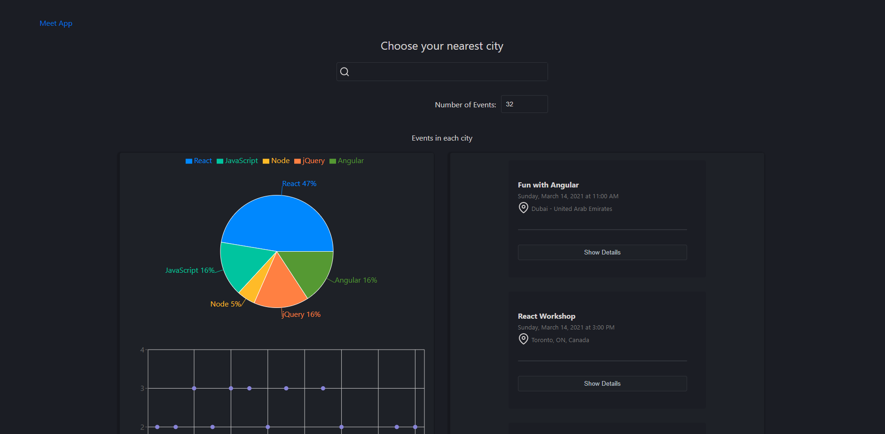
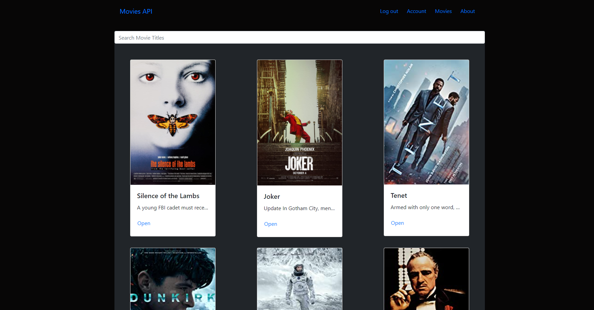
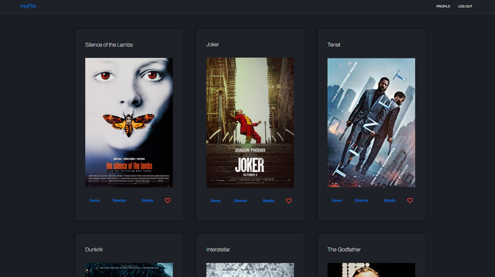
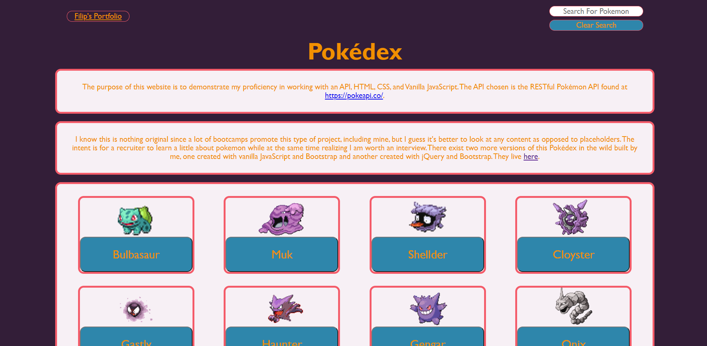
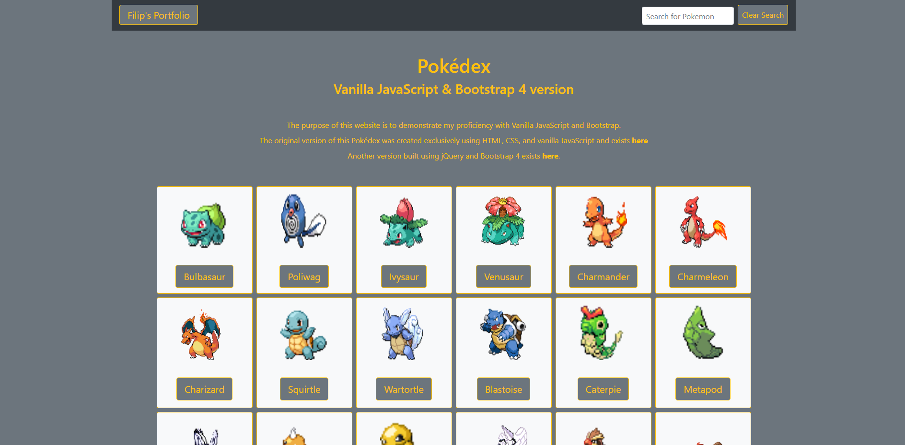
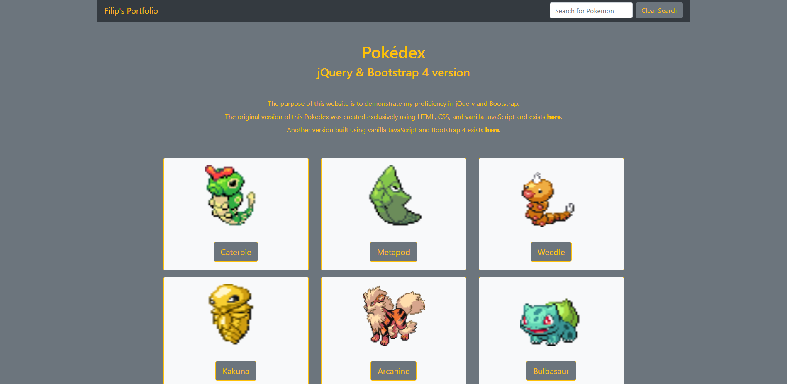

Meet 'meet', the app that helps you meet
This project is the fourth achievement from my CareerFoundry Bootcamp curriculum. It is a serverless PWA with authentication via Google and works offline with cached data. I used the React library, the Recharts Data Visualisation library, Google Calendar API, Jest-Cucumber, Puppeteer and Enzyme for testing and a whole lot of CSS3. The purpose of the app is to demonstrate my abilites in using advanced Web Development techniques and technologies.
myFlix React movie_api-client
This project is the third achievement from my CareerFoundry Bootcamp curriculum. It is the React front-end for a RESTful API I built. I used the React library, Redux for state management and React-Bootstrap for the styling.
myFlix Angular movie_api-client
This project is the sixth and final achievement from my CareerFoundry Bootcamp curriculum. It is the Angular version of the front-end for a RESTful API I built as part of the bootcamp. Here I used the Angular framework, and Angular-Material for the styling.
Pokédex JavaScript Web App
I built this project from scratch using only HTML5, CSS3 and vanilla JavaScript as part of the first achievement from the Career Foundry Online Bootcamp I attended. The app demonstrates my abilites in utilising a RESTfull API.
Pokédex JavaScript & Bootstrap Web App
This is the second version of the Pokédex Web App built using vanilla JavaScript and Bootstrap 4. After I built the vanilla JavaScript, HTML5, and CSS3 version as part of the Career Foundry Online Bootstrap Curriculum, I decided that it would be a good idea to refactor the original code using Bootstrap as an exercise in finding the differences in syntax and application.
Pokédex jQuery & Bootstrap 4 Web App
This is the third and final version of the Pokédex Web App series. In this version, I wanted to get a better grasp of the nuanced differences between vanilla JavaScript and jQuery so I refactored all vanilla JavaScript into jQuery.